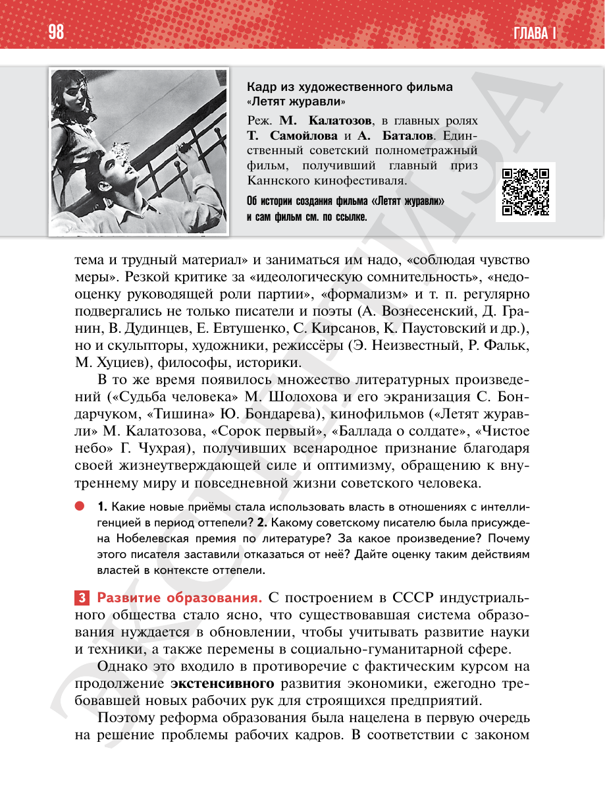

⌂
Мединский.нет
Последнее обновление: 21.08.2026
Мединский.нет
›
История России. 11 класс. Базовый уровень
›
Глава I. СССР в 1945—1991 гг.
›
§ 8. Культурное пространство в 1953—1964 гг.
›
стр. 98

← стр. 97
Оглавление
стр. 99 →
×